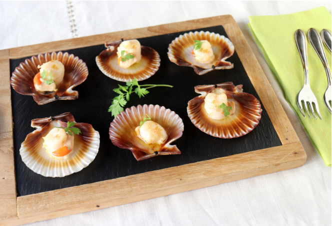

Recipe 3

Description
This is the third recipe. It is delicious and easy to make!
Ingredients:
- 12 zamburiñas
- 2 dientes de ajo pelados muy picados
- 4 cucharadas de aceite de oliva
- perejil fresco.
Instructions
- Preheat the oven to 400°F (200°C).
- Place the scallops in a baking dish.
- In a small bowl, mix the garlic and olive oil.
- Drizzle the garlic oil over the scallops.
- Bake for 10-12 minutes, or until the scallops are cooked through and slightly golden on top.
- Garnish with fresh parsley before serving.
Back to Home